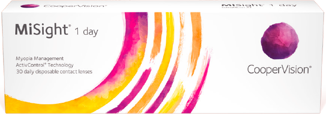

Подбор линз MiSight® 1 day: 3 простых шага
Шаг 1
Подбор оптимальной коррекции и лучшей оптической силы сферы
Шаг 2
Выбор линзы MiSight® 1 day по данным лучшей сферы, учитывая вертексной расстояние
Шаг 3
Двоение и эффект гало могут быть замечены в начале использования, но они быстро исчезают, так как происходит адаптация. В дальнейшем отмечается нормальное зрительное восприятие.
*Данные циклоплегической рефракции могут помочь перед первичным подбором линз MiSight® 1 day.
Для лучшего результата убедитесь, что вертексная поправка по данным цилиндра не более 0.75D.